Proyecciones de Cráneo y SPN
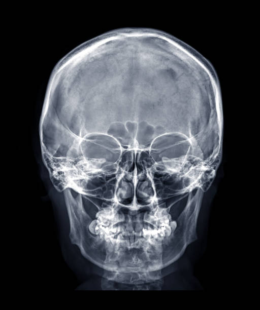
Cráneo AP

Cráneo PA
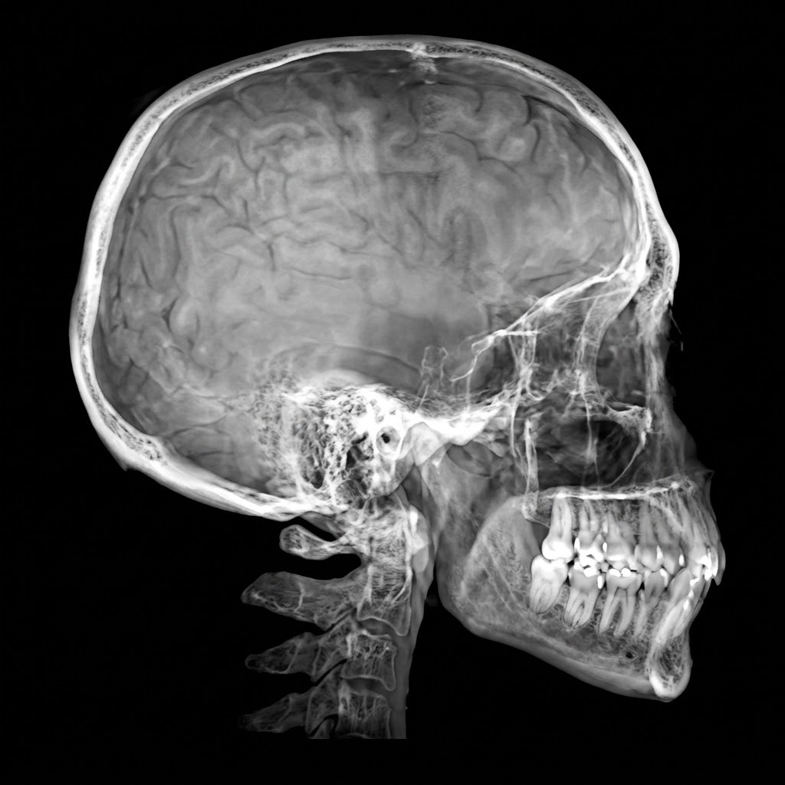
Cráneo Lateral

Cráneo - Towne

Senos Paranasales - Caldwell

Senos Paranasales - Waters
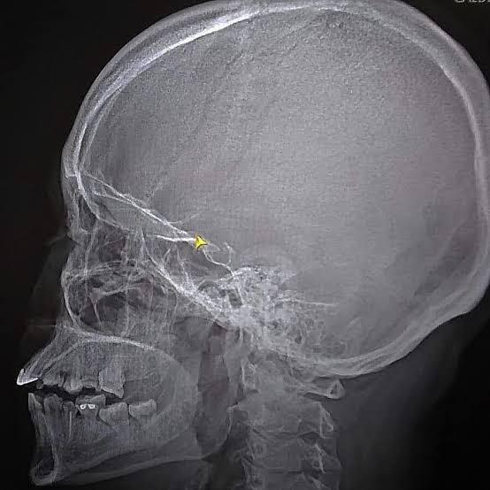
Senos Paranasales - Lateral
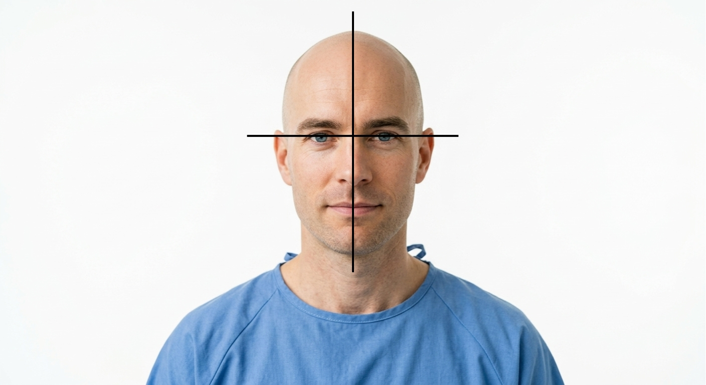
Posicionamiento Paciente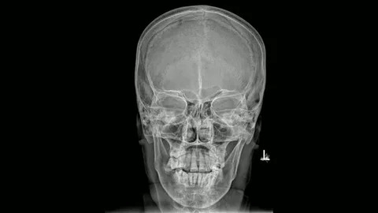
Imagen Radiológica (Rx)Cráneo AP
Piercings, lentes, aros, dentadura removible, gorros, bufandas, mascarillas, etc.
Nada
24 x 30 cm
100 cm (1 metro)
Sí (Estativo o Camilla)
0° en Decúbito Supino / 90° en Bipedestación
70-80 kV
20-32 mAs
- Apnea durante el disparo.
- Sin moverse.
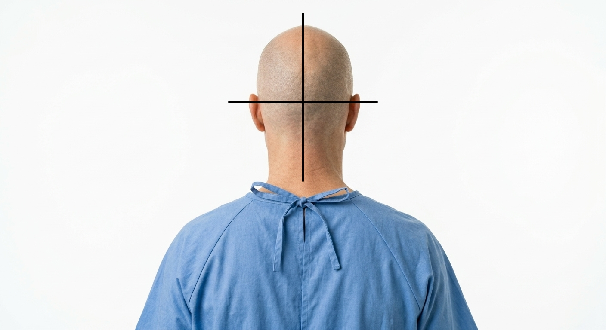
Posicionamiento Paciente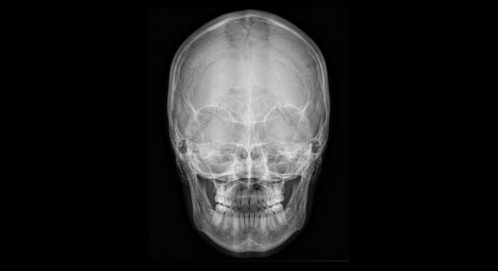
Imagen Radiológica (Rx)Cráneo PA (Posteroanterior)
24 x 30 cm (Longitudinal)
100 cm / 1 m
Sí (Estativo o camilla)
0° (Perpendicular al RI)
Longitudinal sobre Plano Sagital Medio (PSM). Transversal ingresando por la protuberancia occipital externa y emergiendo a nivel del Nasion.
Decúbito prono, de pie o sentado frente al estativo. Apoyo de frente y nariz sobre la superficie. Alineación estricta del PSM y la LHA (Línea Horizontal Alemana) perpendicular al Receptor.
70-80 kV
20-32 mAs
- Apnea durante el disparo.
- Sin moverse.
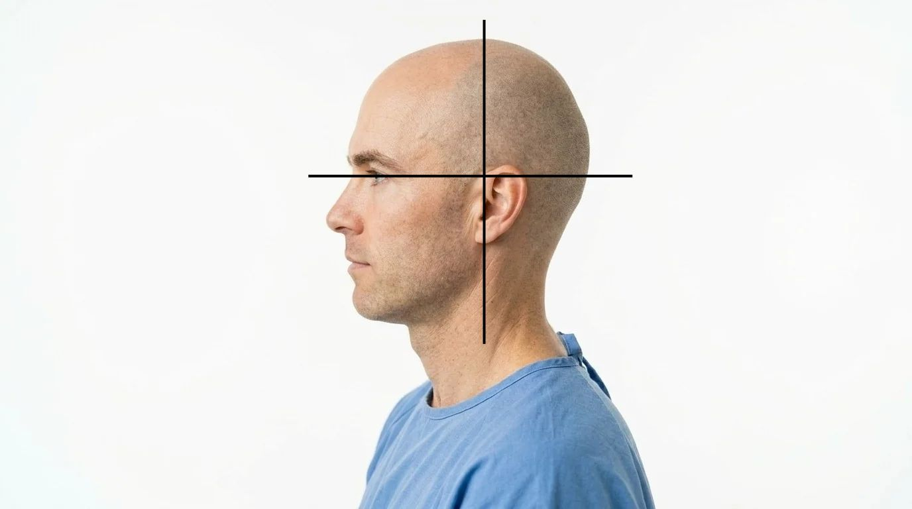
Posicionamiento Paciente Imagen Radiológica (Rx)
Imagen Radiológica (Rx)
Cráneo Lateral
24 x 30 cm (Longitudinal)
100 cm
Sí
0° (Perpendicular al RI)
Longitudinal sobre Plano Medio Coronal a nivel del CAE (Conducto Auditivo Externo). Transversal a nivel de Nasion o Glabela.
De pie, sentado o decúbito prono con la cabeza en lateral estricto apoyada en el RI. LIP (Línea Interpupilar) perpendicular al plano y Plano Sagital Medio (PSM) paralelo.
65-75 kV
16-25 mAs
- Apnea durante el disparo.
- Sin moverse.
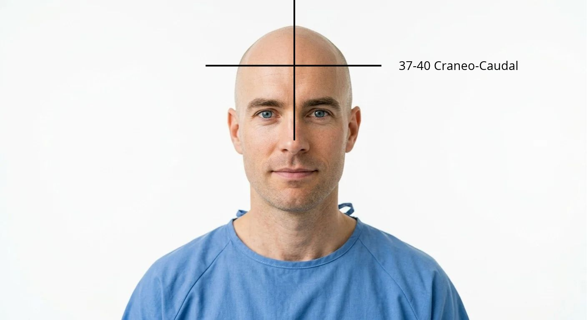
Posicionamiento Paciente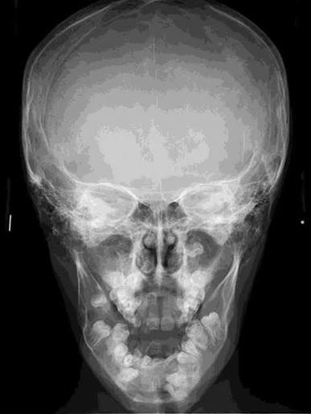
Imagen Radiológica (Rx)Towne (Axial de Cráneo)
24 x 30 cm (Longitudinal)
100 cm
Sí
Angulado en 30° cráneo-caudal respecto a la LOM o 37°-40° caudal respecto a la LHA.
Longitudinal sobre PSM. Transversal a 4 a 6 cm por sobre la glabela, proyectándose el haz por las mastoides.
Decúbito supino, de pie o sentado. Bóveda craneana apoyada en el RI. Flexionar columna cervical bajando el mentón para dejar la LOM perpendicular, o mantener la LHA perpendicular ajustando angulación a 37°-40°.
75-85 kV
25-40 mAs
- Apnea durante el disparo.
- Sin moverse.
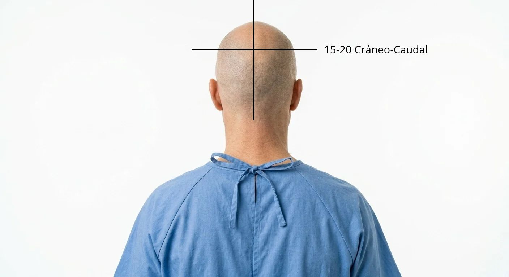
Posicionamiento Paciente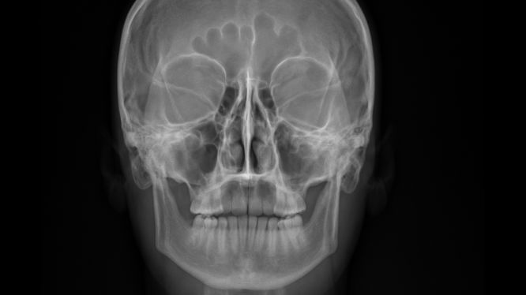
Imagen Radiológica (Rx)Senos Paranasales - Caldwell (Frontonasal)
18 x 24 cm (Longitudinal)
100 cm
Sí
Angulado en 15° a 20° hacia caudal.
Por el frente en el PSM; por el lado a nivel del Nasion.
De pie o sentado. Apoyar frente y nariz en el estativo de manera que la LOM (Línea Órbito-Meatal) quede estrictamente perpendicular al estativo.
70-80 kV
20-32 mAs
- Apnea espiratoria.
- Sin moverse.
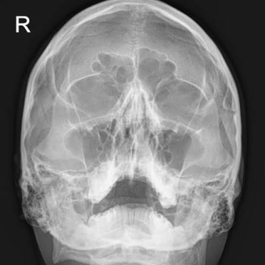
Imagen Radiológica (Rx)Senos Paranasales - Waters (Mento-nasal)
18 x 24 cm (Longitudinal)
100 cm
Sí
Angulado en 15° a 20° cráneo-caudal.
Por el frente en el PSM; por el lado a nivel del Acantion.
De pie o sentado. Apoyar nariz y mentón en el estativo. Abrir la boca para observar los senos esfenoidales a través de la arcada dentaria. La LAM (Línea Acanto-Meatal) debe quedar perpendicular a la mesa/estativo.
75-85 kV
20-32 mAs
- Apnea espiratoria.
- Sin moverse.
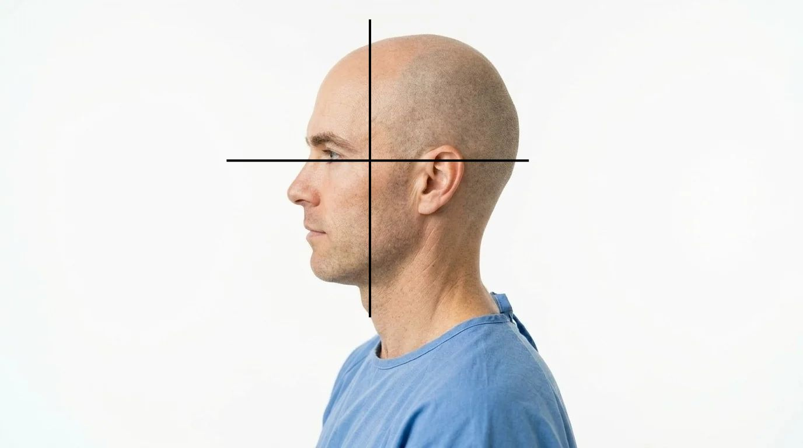
Posicionamiento Paciente Imagen Radiológica (Rx)
Imagen Radiológica (Rx)
Senos Paranasales - Lateral
18 x 24 cm (Longitudinal)
100 cm
Sí
0° Perpendicular al centro del chasis.
Ubicado a dos traveses de dedo hacia anterior del CAE (Conducto Auditivo Externo).
De pie o sentado en lateral estricto. PSM paralelo a la mesa/estativo y LIP (Línea Interpupilar) perpendicular.
65-75 kV
12-20 mAs
- Apnea espiratoria.
- Sin moverse.